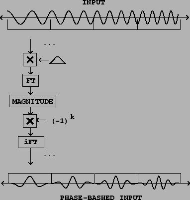
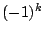
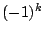

In Section 2.3 on enveloped sampling we saw how to make a periodic waveform from a recorded sound, thereby borrowing the timbre of the original sound but playing it at a specified pitch. If the window into the recorded sound is made to precess in time, the resulting timbre varies in imitation of the recorded sound.
One important problem arises, which is that if we take waveforms from different windows of a sample (or from different samples), there is no guarantee that the phases of the two match up. If they don't the result can be ugly, since the random phase changes are heard as frequency fluctuations. This can be corrected using Fourier analysis and resynthesis [Puc05].
|  |
Figure 9.13 shows a simple way to use Fourier analysis to align
phases in a series of windows in a recording. We simply take the FFT of the
window and then set each phase to zero for even values of  and
and
 for odd ones. The phase at the center of the window is thus zero for
both even and odd values of
for odd ones. The phase at the center of the window is thus zero for
both even and odd values of  . To set the phases (the arguments of the
complex amplitudes in the spectrum) in the desired way, first we find the
magnitude, which can be considered a complex number with argument zero. Then
multiplying by  adjusts the amplitude so that it is positive and
negative in alternation. Then we take the inverse Fourier transform, without
even bothering to window again on the way back; we will probably want to apply
a windowing envelope later anyway as was shown in Figure 2.7. The
results can be combined with the modulation techniques of Chapter 6 to yield
powerful tools for vocal and other imitative synthesis.
. To set the phases (the arguments of the
complex amplitudes in the spectrum) in the desired way, first we find the
magnitude, which can be considered a complex number with argument zero. Then
multiplying by  adjusts the amplitude so that it is positive and
negative in alternation. Then we take the inverse Fourier transform, without
even bothering to window again on the way back; we will probably want to apply
a windowing envelope later anyway as was shown in Figure 2.7. The
results can be combined with the modulation techniques of Chapter 6 to yield
powerful tools for vocal and other imitative synthesis.